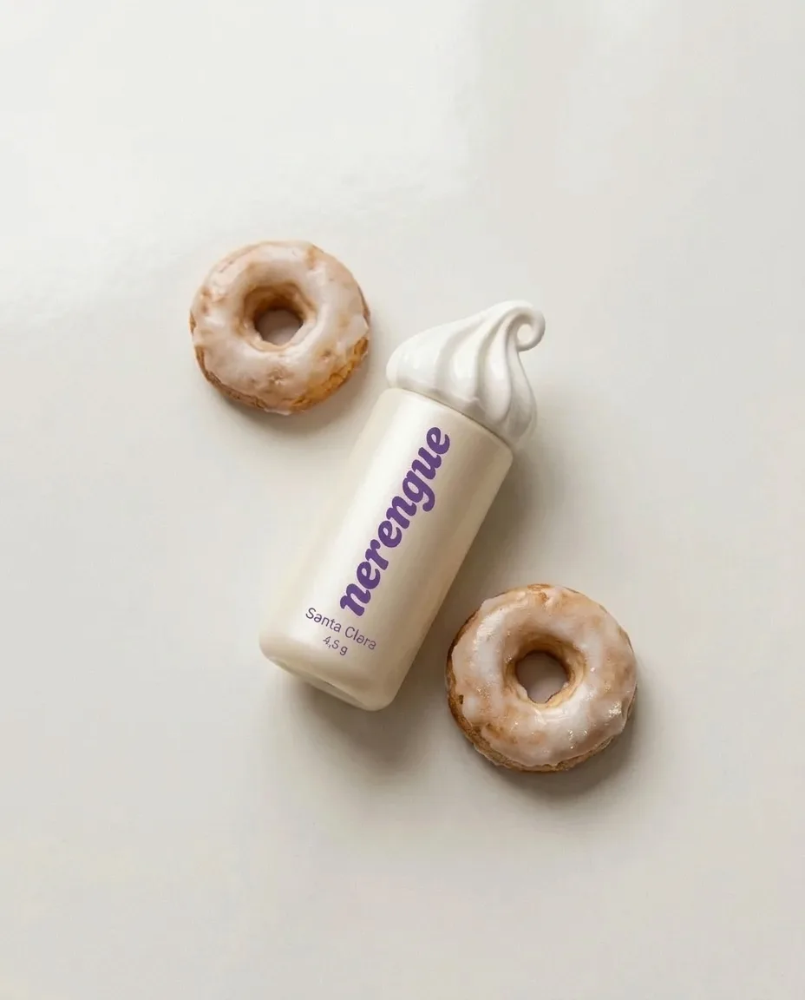
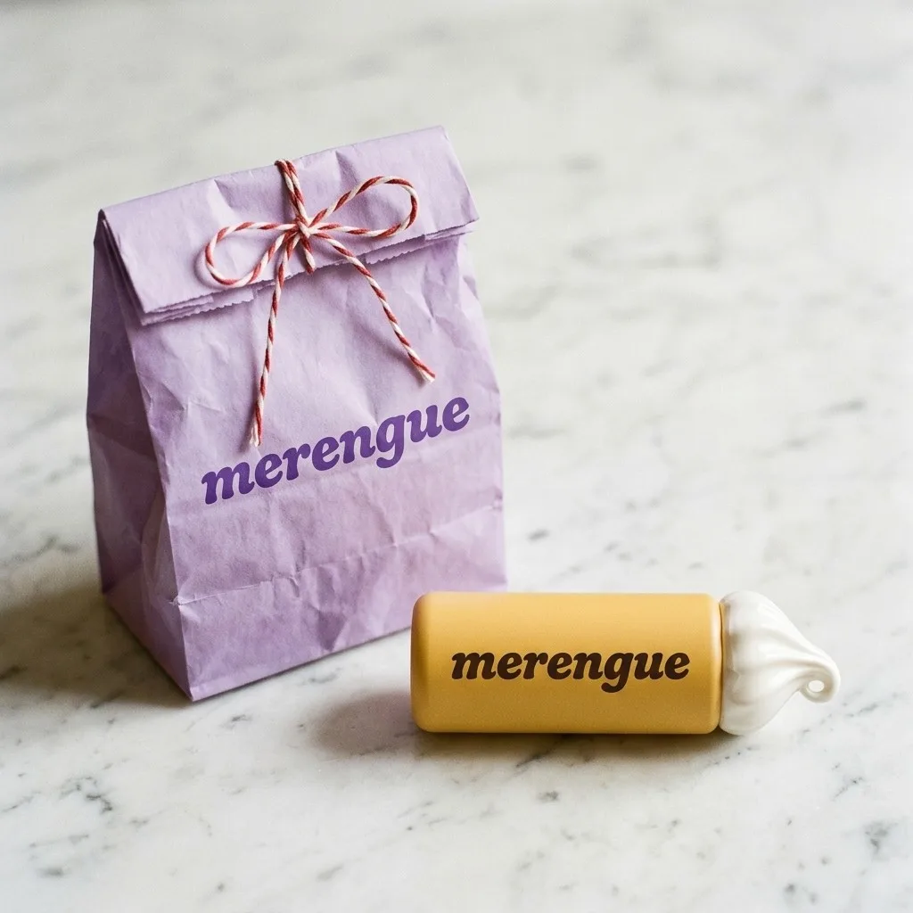
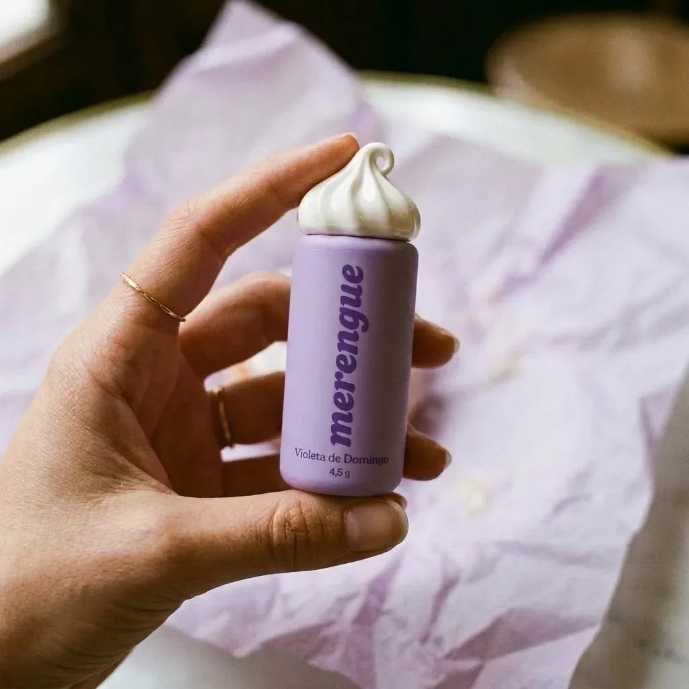
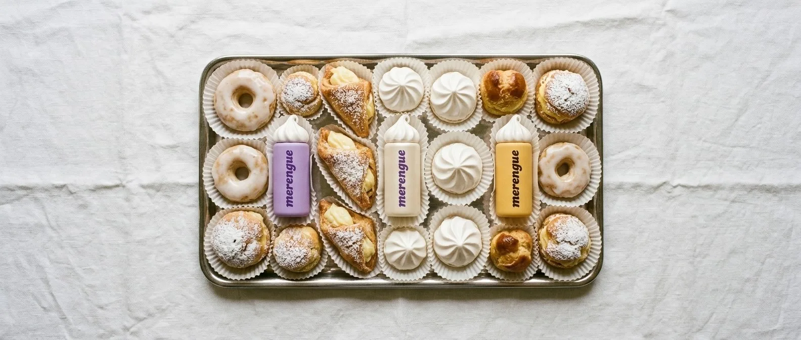

Nº 01 · Caramelo de violeta
Violeta de Domingo
Dulce, discreta y muy de Madrid.
4,5 g
Bálsamo labial · Hecho en Madrid

Dulces de toda la vida, para los labios
Mientras todas las marcas se ponen nude, nosotras nos fijamos en el escaparate de la pastelería de la esquina. Violeta, rosquilla y bartolillo. Sabores que ya conoces, ahora para llevarlos puestos.
Nº 01 · Caramelo de violeta
Dulce, discreta y muy de Madrid.
4,5 gNº 02 · Rosquilla de Santa Clara
El glaseado más fino de Madrid.
4,5 g
Nº 03 · Bartolillo de crema
Lo juramos, está cremita.
4,5 g

Modo de uso
Aplicar cuando haga falta.
O cuando no.
Pop-up · 12, 13 y 14 de diciembre
Confitería Hermanas Arrieta · Desde 1931 · Lavapiés
Se vende dulce para los labios. Pasa, pruébalo y no te manches.
